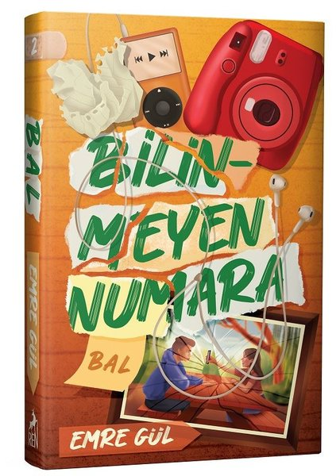

Masallarla doğar insan.Hikâyelerle büyür, romanlarla ölür.
Nice masallar dinledim.Kulağıma fısıldanan hikâyelerle anladım her şeyin masallardaki kadar tozpembeolmadığını. En nihayetinde romanlarla öğrendim insanların göründüğü kadar masumolmadığını…
Küçük bir çocuktum, masalgibi bir dostluk diledim, buldum. En güzel anları onunlayaşadım. Fakat… Artık çocuk değildim. Kazandım, kaybettim. Düştüm, kalktım.İnanmadığım aşkın en güzeline ulaştım. Masal gibi bir dostluğu da yaşadım,masallardaki gibi aşkı da.
Bir mesajla hayatının tüm dengesini kaybeden ÇınarDuman, bir daha hiçbir şeyin eskisi gibi olmayacağını bildiği halde her şeyigeride bırakıp gider. Öfkeyle aldığı bu kararının düşündüğü kadar kolayolmadığını, kafasının içinde susmak bilmeyen geçmişi ile anlamıştır.
Eski hayatına yeniden döndüğünde hiçbir şey bıraktığıgibi değildir artık. Yalnızca Balın İmge… O günün enkazından kendisi gibi o dakurtulamamıştır hâlâ. Yaz projesiyle dostluklarına düşen gölgenin karanlığındankurtulmak için çabalayan ikili, ilişkilerindeki çatlakları onarmaya çalışırkenolaylar yine hiç tahmin etmedikleri bir yönde gelişmeye devam eder.
'SARILALIM. KALBİN SAĞYANIMA DENK GELSİN. DENK GELSİN Kİ RUHLARIMIZ TAMAMLANSIN!'